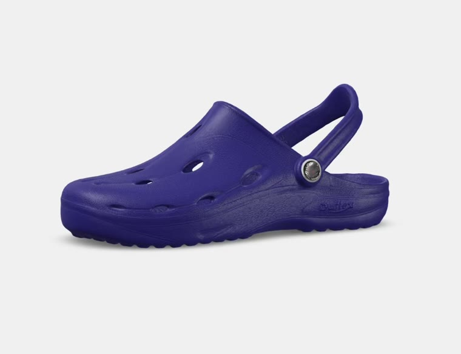

Scrolle, um den Dux von allen Seiten zu erleben.
Das federleichte Material federt jeden Schritt ab — sichtbar im Glow an der Sohle, spürbar bei jedem Tritt.
Das geprägte Fußbett stützt den Fuß, wo er es braucht, statt sich nur platt zu drücken.
Der Riemen lässt sich nach hinten klappen oder fest schließen — sicherer Halt in jeder Situation.
Die Lochung an den Seiten sorgt für Luftzirkulation, damit der Fuß auch an warmen Tagen kühl bleibt.